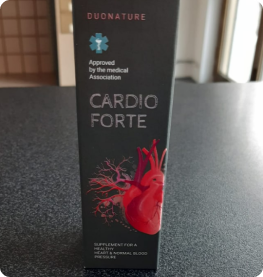
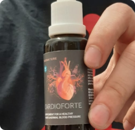

diário de Notícias
..


Невероятное открытие: немецкий ученый обнаружил уникальный рецепт лечения сосудистых заболеваний.
Сердечно-сосудистые заболевания в прошлом: открыта первая в мире методика излечения на базе уникальной формулы от немецкого ученого
В период с 2020 по 2021 год Португалию потрясла высокая волна смертности от COVID-19. Несмотря на попытки Министерства здравоохранения урегулировать ситуацию, медики столкнулись с проблемой резкого повышения летального исхода от сердечно-сосудистых заболеваний.
Данная проблема всколыхнула общество, и мы не могли остаться в стороне. 5 месяцев назад мы начали проводить журналистское расследование, чтобы найти истинную причину повышения смертности. Долгое время мы собирали актуальную информацию о текущих исследованиях. Многие специалисты не давали никаких комментариев относительно ситуации, и мы решили обратиться к своим иностранным коллегам – журналистам из Германии.
Эпидемия COVID-19, потрясшая весь мир, привела к новым научным открытиям. Ученый из Германии, занимающийся исследованием вирусов подкласса «коронавирусы», разработал уникальную формулу. По утверждению представителей международного научного сообщества, эта формула станет новой вехой в лечении сердечно-сосудистых заболеваний – основной угрозы и опасности для жителей Европы.
Сегодня мы пригласили ученого и кардиолога Alexander Tsynman, совершившего уникальное открытие, которое позволит спасти десятки тысяч жизней. Он рассказал нам про особенности появления сердечно-сосудистых заболеваний и свое открытие.
“Сосуды – основа организма”
Редакция: Здравствуйте, доктор Alexander Tsynman. По мнению многих медицинских специалистов, сердечно-сосудистые заболевания появляются у каждого человека после достижения им 40 лет. Правда ли это?
Alexander Tsynman: Здравствуйте. Нет, это неправда. Повышенное давление и сердечно-сосудистые заболевания – это сигнал организма. Он дает нам понять, что внутренние механизмы работают не так, как нужно.
Что говорит врач, когда пациент жалуется на сердечно-сосудистые заболевания? Он утверждает, что болезнь возникла из-за возраста и выписывает препараты для снижения давления. Но эти препараты не лечат, они лишь пытаются поддержать организм. Я утверждаю: сердечно-сосудистые заболевания можно вылечить. Нужно просто понять взаимосвязь между сосудами и внутренними системами человека.
Редакция: Вы хотите сказать, что сердечно-сосудистые заболевания скоро исчезнут?
Alexander Tsynman: Нет, это невозможно. Изменится сам процесс течения заболевания и его влияние на состояние человеческого организма. Именно в этом и заключается инновационность моего открытия. Я никогда не говорю о неподтвержденных данных: были проведены официальные исследования, мы подбирали фокус-группу для изучения действия препарата, о котором я расскажу чуть позже.
Редакция: Исследования были успешными?
Здоровое сердце
Инфаркт
Сердечная недостаточность
Alexander Tsynman: Да, я смог достичь удивительных результатов. На стадии тестирования было подобрано 10 людей разного возраста. Часть людей жаловалась на первичные симптомы сердечно-сосудистых заболеваний, у других уже имелись болезни периферических артерий, сосудов головного мозга и другие. Чтобы полностью исключить вероятность получения недостоверных данных, я подбирал людей с разным образом жизни: курящих пациентов, людей, которые раньше жили в городах с плохой экологией, больных с плохой наследственностью.
Каждый из 10 пациентов действовал по указанной методике, и в 10 случаях мы достигли успеха. Более того, за пациентами, которые принимали участие в исследовании препарата, я наблюдал в течение полутора лет. Каждый избавился от своего недуга.
Редакция: Ранее вы упоминали, что многие врачи назначают препараты, которые не помогают. С чем это связано?
Alexander Tsynman: Дело в том, что нормы, регулирующие профилактику и лечение сердечно-сосудистых заболеваний, были разработаны несколько десятков лет назад. В то время наука технически не могла определить оптимальные методики. Пациентам выписывали и продолжают выписывать классические препараты, которые временно нормализуют давление. И эти препараты работают не с причиной, а со следствием. Нужно понимать, что их прием не решает проблему кардинально.
Моя практика показывает, что в 90% случаев подобное «лечение» приводит к необходимости хирургического вмешательства. Я видел очень много людей, которые перенесли операции, но это все равно не решило проблему. Представьте, как себя чувствует человек, который потратил много денег на неэффективные препараты, прошел через множество операций и все равно остался на том же месте в плане болезни. А в некоторых случаях исход это может привести к значительному ухудшению самочувствия. Результаты всех исследований я представил перед международным научным сообществом. Более 1000 врачей со всех стран мира смогли убедиться в том, что моя формула действительно работает. Насколько мне известно, сегодня в 58 странах Минздрав обсуждает введение созданного мной препарата на государственном уровне в национальные здравоохранительные программы.

Фотография Alexander Tsynman с международной кардиологической конференции
Редакция: А как же универсальные методы? Я слышала про пользу физиотерапевтических процедур. Получается, они бесполезны?
Alexander Tsynman: Нет, они работают. Но их действие краткосрочно. Они лишь уменьшают симптоматику, маскируют ее. Под воздействием таких процедур наш мозг получает сигнал, что все в порядке. Разумеется, человек не будет ощущать ни головокружения, ни сильных болей и нехватки кислорода и других симптомов. Но, поймите, это усугубляет проблему: маскировка симптомов не является лечением. Это просто самообман.
Редакция: Хорошо. Теперь расскажите о Вашем открытии. Это действительно прорыв в лечении сердечно-сосудистых заболеваний?
Alexander Tsynman: Я бы не стал называть себя первооткрывателем. Видите ли, в самом начале своей карьеры я интересовался азиатской медициной. Изучал труды ее представителей и узнавал методики с высокой эффективностью, которые базируются на натуральных компонентах.
В отличие от классических методов, разработанный мной препарат Cardifort адаптивен. Это значит, что он направлен на профилактику и лечение всех типов сердечно-сосудистых заболеваний, он «подстраивается» под индивидуальные особенности организма пациента.
Признаюсь, на этапе тестирования я рассчитывал на эффективность препарата Cardifort в диапазоне 60%-70%. Дальнейшие клинические исследования показали, что улучшения наблюдались у пациентов из каждого сегмента.

Расщепление холестириновых бляшек
Редакция: То есть, Cardifort – препарат, способный спасти и избавить от страданий тысячи пациентов? Это похоже на волшебство! Вы можете рассказать про историю его создания?
Alexander Tsynman: Нет, никаких чудес, исключительно наука. После пандемии COVID-19 перед учеными и медиками была поставлена задача изучить особенности этого типа коронавируса. В ходе исследования я обнаружил его поведенческие факторы.
После попадания вируса в организм иммунная система человека начинает вырабатывать лейкоциты – это специальные кровяные клетки. Иногда они справляются с защитой, но во многих случаях вирус проходит дальше. Тогда они начинают посылать «сигналы» по организму, сигнализируя о «бедствии». Они называются цитокоинами.
Это уникальные белковые молекулы, выполняющие информационную роль. После появления такого сигнала человек и начинает чувствовать все симптомы заболевания. Чем дальше распространяется вирус, тем больше цитокоинов вырабатывает организм. Но поскольку иммунная система человека уже начала свою активную работу, цитокоины начинают превращаться в опасные для человека вещества. После этого начинаются серьезные осложнения.
Редакция: И как это связано с препаратом Cardifort ?
Alexander Tsynman: Основная причина возникновения сердечно-сосудистых заболеваний – проблемы с кровообращением. Например, артериальная гипертензия приводит к видоизменению стенок сосудов и их последующему сужению, а гипертония вызывает утолщение стенок сердца. Соответственно, главной задачей при лечении является нормализация кровообращения.
При разработке препарата я отталкивался от данных, полученных в ходе изучения COVID-19. Как и в случае с вирусом, препарат доставляет нужные кровяные клетки в сосуды, в результате чего запускается процесс RGKL – регенерация изношенных клеток и тканей, которые часто приводят к закупорке сосудов.

Хирургиское лечении при закупорки
Атеросклеротическая бляшка
Закупорка сосудов требует дорогостоящего хирургического вмешательства
Alexander Tsynman: Более того, поступление кровяных клеток в результате процесса RGKL способствует очищению сосудов от атеросклеротических бляшек. Еще одна особенность – кровяные клетки насыщают все сосуды в организме, что приводит к общей нормализации кровотока.
То есть, принцип действия Cardiofort кардинально отличается от классических препаратов.
Редакция: Кто может воспользоваться Cardifort ?
Alexander Tsynman: Во-первых, препарат имеет научно доказанную эффективность. Мы проводили несколько стадий исследований, и эффективность наблюдалась у всех респондентов на разных этапах лечения. Во-вторых, сегодня Cardiofort рекомендуют ведущие специалисты в области кардиологии. В-третьих, в процессе тестирования не было выявлено побочных эффектов. Соответственно, я могу назвать Cardiofort универсальным препаратом.
Редакция: По инструкции препарат достаточно применять три раза в день?
Alexander Tsynman: Да, именно так. Хочу заметить, что пациентам не стоит ожидать эффекта после первого приема. Это невозможно – такое обещают только производители препаратов-пустышек. Поймите: организму нужно время на обновление тканей и клеток сосудов. Поэтому те врачи, которые обещают эффект за пару дней – обманывают вас!
Реальные результаты можно ожидать после двух недель приема. Именно в этот период происходит нормализация давления и нейтрализация первичной симптоматики. В течение следующих недель эффект закрепляется и усиливается, поскольку обновленные кровяные клетки уже появились в организме. Результаты тестирования показали, что 80% пациентов почувствовали улучшения в период 14-20 дней после начала приема препарата.
Редакция: Вы можете поделиться подробной статистикой?
Alexander Tsynman: Конечно, ведь только подтвержденные исследования доказывают эффективность любого препарата.
Нормализация кровяного и артериального давления
98,3% пациентов
Отсутствие накопительных и побочных эффектов
99,7% пациентов
Приостановка прогрессирования и развития заболеваний
100% пациентов
Избавление от сопутствующих симптомов
99,5% пациентов
Нормализация биологических процессов в организме
98,9% пациентов
Редакция: Вы хотите что-то пожелать нашим читателям?
Alexander Tsynman: Я дам несколько полезных советов. Cardifort – это не просто препарат, это полноценный комплекс, состоящий из натуральных компонентов и питательных веществ.

Листья кумквата (фортунелла).
Одна из наиболее редких растительных культур, произрастающая на склонах горных вершин Хуашань и Тайшань на юго-востоке Китая. Полезные свойства фортунеллы отмечались китайскими буддистскими монахами в рукописях XII века. Компонент отвечает за процесс RGRL, регулирует процесс регенерации изношенных клеток и тканей, очищает сосуды от токсичных веществ.
Пустырник сердечный.
Насыщает сосуды питательными веществами, необходимыми для нормальной работы сосудистой системы.
Экстракт оливы.
Оказывает антиоксидантный и антисептический эффект.
Вытяжка боярышника обыкновенного.
Нормализует кровяное давление, нейтрализует сердечную недостаточность и аритмию, оказывает успокоительный эффект.
Хмель обыкновенный.
Усиливает процесс распространения питательных веществ по сосудам.
Прошу обратить внимание, что покупать данный препарат следует на официальном сайте. К сожалению, к нам иногда обращаются пациенты, которые жалуются на отсутствие эффекта от Cardifort . Потом выясняется, что они покупали неоригинальный препарат. Я попрошу вас указать ссылку на официальный сайт, чтобы читатели смогли избавиться от своих проблем со здоровьем.
Мне, как врачу, очень приятно, что я могу помочь многим людям. Напоследок хочу пожелать здоровья каждому, кто прочитает это интервью. Помните, что ваше здоровье в ваших руках.

Комментарии
João Vítor Gusmão Позавчера мой лечащий врач порекомендовал мне принимать Cardifort. Я очень удивился такой рекомендации, поскольку раньше не слышал об этом препарате. И сегодня случайно увидел это интервью. Доктор, спасибо за подробное разъяснение, планирую заказать две упаковки.
4
..
Maria de Belem Assunção Подскажите, уже успели заказать? Хотела купить для своих родственников, боюсь, что доставка будет долгой.
..
Sebastiana Canela Мне пришло за неделю, а моей маме через 12 дней. Думаю, здесь все зависит от скорости работы почты и удаленности от Лиссабона.
..
Geraldo Santiago Sebasiana, да, вы правы. Я уточнял у оператора – посылку отправляют на следующий день, дальше все будет зависеть от почты.
..
Fernanda Natal Мой отец жаловался на повышенное давление, принимал только препараты для его понижения. После приема Cardifort контролировали давление, пока все в норме.
10
..
Vitorino Belo А можно ли принимать Cardifort, если аритмия появилась из-за стресса?
..
Marcelo Arruda Vitorino, у меня была такая же ситуация, консультировался по этому поводу со своим кардиологом. Он разрешил.
..
Lúcia Carneiro Проверила Cardifort на своем опыте. У меня диагностировали артериальную гипертензию еще в 37 лет. После одного курса врач сказал, что наблюдаются улучшения и в связи с этим порекомендовал пропить второй курс препарата.
9
..
Luciano Rodrigues Не подскажете схему приема?
..
Lúcia Carneiro В инструкции указано принимать 28 капель три раза в день.
..
Lívia Amorim Впервые услышала о Cardifort полгода назад. Были проблемы с аритмией. На улучшения не рассчитывала, поскольку другие препараты помогали не больше, чем на один день. Пока эффект держится, очень надеюсь, что так будет продолжаться.
43
..
Manuel Barroso Страдал от давления и головных болей пару лет. Единственное, что помогало на время, это гипотензивные препараты. Пока принимаю Cardifort три недели, но улучшения уже заметны. Буду спрашивать у врача, можно ли принимать несколькими курсами.
69
..
Júlia Amorim Могу сказать за себя, что я принимала этот препарат в течение двух курсов. Эффект был после первого курса, но кардиолог посоветовал закрепить результат.
..
Alexandre Brá А если есть немного повышенное давление, его можно корректировать с помощью Cardifort?
..
José de Sintra У меня были небольшие отклонения по артериальному давлению, принимал Cardifort в качестве профилактики. Постепенно давление скорректировалось.
..
Victor Henriques Пропил половину курса, обследования показали положительный результат.
..